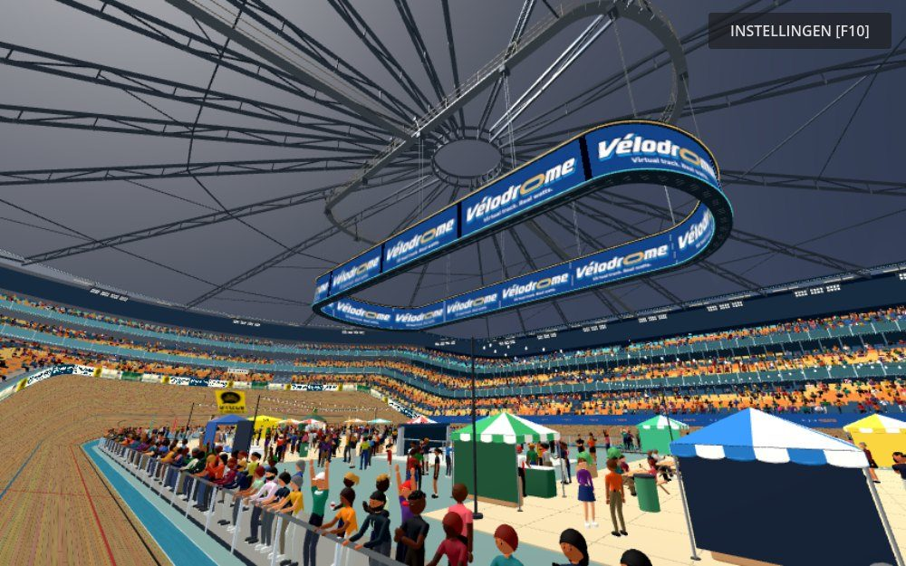

Track cycling on a virtual velodrome
Ride a 250-metre track with your smart trainer or keyboard.

Free ERG Training
Build your own workout or import a .zwo file and train at the power you choose.

Train your track skills before putting them to the test in a race
Practise the hand sling, the flying start or riding behind the derny.

Prove your all-round skills in the omnium
Ride four events for one overall classification.
Vélodrome is available for Windows and macOS. Explore downloads.
Riding the wheel
Drafting matters. Sheltering saves energy for later, and a sprint launched too early costs you in the final bend.
Opponents with their own profile
Sprinters, time triallists and attackers each race their own way: jumping away, driving the pace or waiting for the bell. Every rider has a passport showing their strengths.
Real watts, real effort
Connect a compatible FTMS smart trainer and feel the track in your legs. Track gradient and slipstream affect resistance. Control your rider with Zwift Ride or your keyboard, and connect your heart rate monitor via Bluetooth. Export your ride to Strava.
No smart trainer needed
No smart trainer? No problem. Set your watts and steer your rider with the keyboard. You can race and experience the atmosphere of the velodrome without any extra hardware.
Race formats
From scratch and points races to tempo, elimination, keirin and pursuit: every discipline demands a different tactic. Work together in team pursuit, discover Madison exchanges or prove your versatility in the omnium. Choose your favourite race and take on a virtual peloton.


A full velodrome




Train on the track and on power
Find your FTP with the ramp test or the 20-minute FTP test. Build workouts in the editor or import .zwo files. On the track, practise the flying start, the hand sling or riding behind the derny.
Ready to ride?
Vélodrome is free and open source. Download it for Windows or macOS.